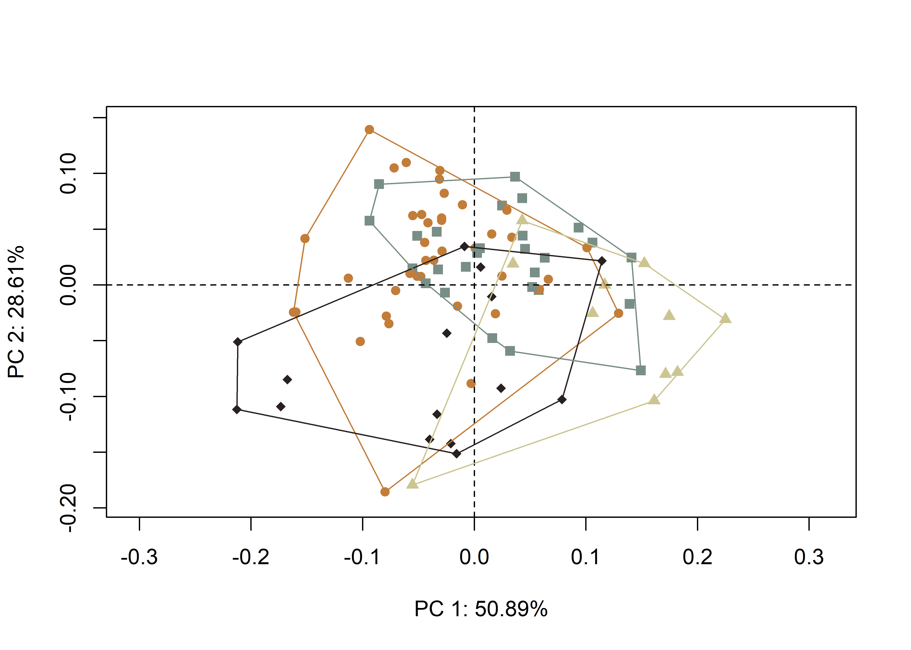
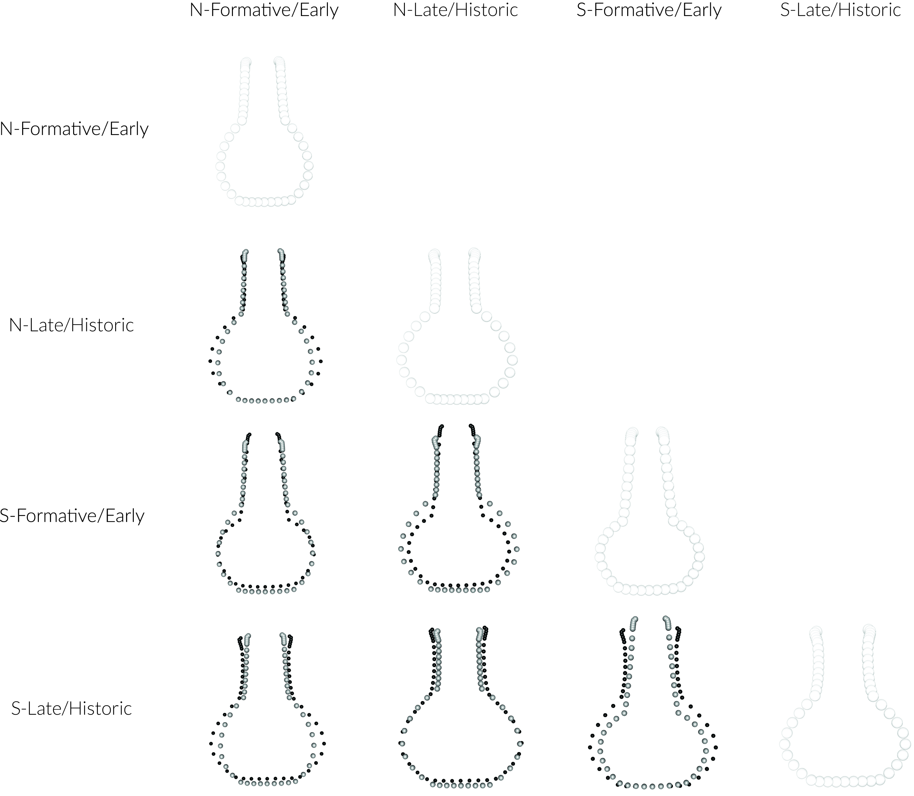
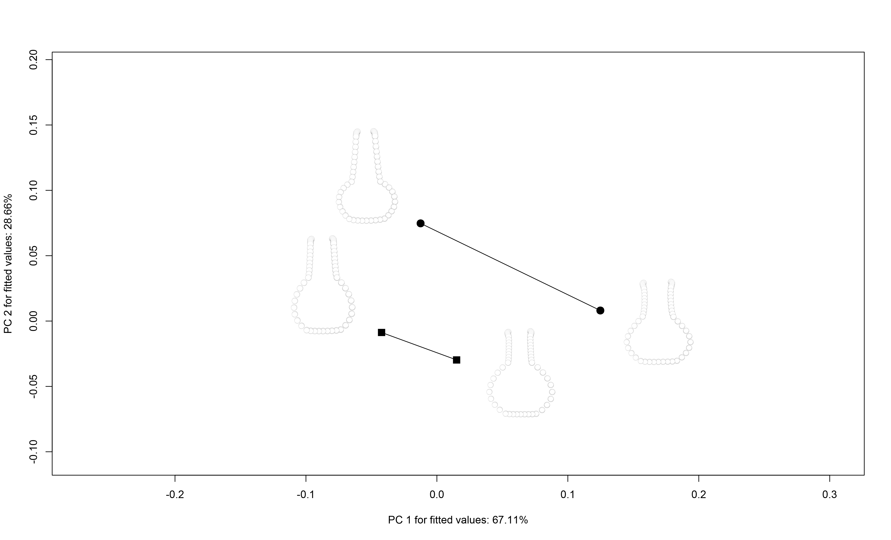

Chapter 2 Analysis of Caddo bottle morphology
2.1 Load packages + data
# load packages
# devtools::install_github("combmorphR/combmorph", ref = "Stable", build_vignettes = TRUE)
library(here)
library(geomorph)
library(tidyverse)
library(wesanderson)
# read GM data
source('readmulti.csv.R')
setwd("./data")
filelist <- list.files(pattern = ".csv")
coords <- readmulti.csv(filelist)
setwd("../")
# read qualitative data
qdata <- read.csv("qdata.csv",
header = TRUE,
row.names = 1)
qdata <- qdata[match(dimnames(coords)[[3]],
rownames(qdata)),]2.2 Generalised Procrustes Analysis
Landmark data were aligned to a global coordinate system (Kendall 1981, 1984; Slice 2001), achieved through generalised Procrustes superimposition (Rohlf and Slice 1990) performed in R 4.0.3 (R Core Development Team, 2020) using the geomorph library v. 3.3.2 (Adams et al. 2017; Adams and Otárola-Castillo 2013). Procrustes superimposition translates, scales, and rotates the coordinate data to allow for comparisons among objects (Gower 1975; Rohlf and Slice 1990). The geomorph package uses a partial Procrustes superimposition that projects the aligned specimens into tangent space subsequent to alignment in preparation for the use of multivariate methods that assume linear space (Rohlf 1999; Slice 2001).
# gpa
Y.gpa <- gpagen(coords,
PrinAxes = TRUE,
ProcD = TRUE,
Proj = TRUE,
print.progress = FALSE)
# geomorph data frame
gdf <- geomorph.data.frame(shape = Y.gpa$coords,
size = Y.gpa$Csize,
geo = qdata$geo,
time = qdata$time,
comb = qdata$comb)
# render 3d gpa plot
#plot(Y.gpa)
# gpa plot
knitr::include_graphics('images/gpa3d.png')
# add centroid size to qdata
qdata$csz <- Y.gpa$Csize
# print updated qdata with centroid size
knitr::kable(qdata,
align = "lccccc",
caption = "Modified attributes included in qdata.")| site | type | geo | time | comb | csz | |
|---|---|---|---|---|---|---|
| 1-15-3-Pot3 | Atkinson Farm | Hodges Engraved | north | Late-Historic | north, late historic | 336.4793 |
| 1054 | Belcher Mound | Taylor Engraved | north | Late-Historic | north, late historic | 221.1933 |
| 1073 | Belcher Mound | Belcher Engraved | north | Late-Historic | north, late historic | 396.8419 |
| 121 | Salt Lick | Wilder Engraved | south | Late-Historic | south, late historic | 308.8975 |
| 132 | Paul Mitchell | Hickory Fine Engraved | north | Formative-Early | north, formative early | 687.3149 |
| 142 | Allen Plantation | Hickory Fine Engraved | south | Formative-Early | south, formative early | 810.0585 |
| 152 | Smithport Landing | Smithport Plain | south | Formative-Early | south, formative early | 222.3931 |
| 157 | Smithport Landing | Hickory Fine Engraved | south | Formative-Early | south, formative early | 635.9682 |
| 16 | Pohler Coll | UID | north | Late-Historic | north, late historic | 718.4339 |
| 16sa37-121 | Eleven Ton Bridge | Wilder Engraved | south | Late-Historic | south, late historic | 305.4943 |
| 18 | Pohler Coll | Smithport Plain | north | Formative-Early | north, formative early | 624.6644 |
| 19-361 | George C Davis | Holly Fine Engraved | south | Formative-Early | south, formative early | 652.1150 |
| 19-4020 | George C Davis | Holly Fine Engraved | south | Formative-Early | south, formative early | 719.2440 |
| 2 | Mustang Creek Mound | Hickory Fine Engraved | north | Formative-Early | north, formative early | 715.1674 |
| 20 | Pohler Coll | Hickory Fine Engraved | north | Formative-Early | north, formative early | 487.5317 |
| 2007.18.02 | Green | UID | north | Late-Historic | north, late historic | 632.7158 |
| 2015-1 | George C Davis | Hickory Fine Engraved | south | Formative-Early | south, formative early | 425.1642 |
| 2097-1 | George C Davis | Holly Fine Engraved | south | Formative-Early | south, formative early | 593.4289 |
| 23 | Pohler Coll | Hickory Fine Engraved | north | Formative-Early | north, formative early | 669.7663 |
| 24 | Pohler Coll | UID | north | Late-Historic | north, late historic | 418.6807 |
| 256 | Belcher Mound | Taylor Engraved | north | Late-Historic | north, late historic | 458.8372 |
| 267 | Belcher Mound | Belcher Engraved | north | Late-Historic | north, late historic | 463.8621 |
| 269 | Belcher Mound | Belcher Engraved | north | Late-Historic | north, late historic | 557.5507 |
| 27 | Pohler Coll | Smithport Plain | north | Formative-Early | north, formative early | 639.5040 |
| 271 | Belcher Mound | Taylor Engraved | north | Late-Historic | north, late historic | 477.0324 |
| 29 | Pohler Coll | UID | north | Late-Historic | north, late historic | 625.1986 |
| 30 | Pohler Coll | Maxey Noded Redware | north | Formative-Early | north, formative early | 571.6977 |
| 31-1-79 | Poole | Maxey Noded Redware | north | Formative-Early | north, formative early | 571.5949 |
| 31 | Pohler Coll | UID | north | Late-Historic | north, late historic | 620.5723 |
| 317 | Belcher Mound | UID | north | Late-Historic | north, late historic | 686.0103 |
| 325 | Belcher Mound | Wilder Engraved | north | Late-Historic | north, late historic | 550.6656 |
| 340 | Belcher Mound | UID | north | Late-Historic | north, late historic | 620.1775 |
| 361 | Belcher Mound | Belcher Engraved | north | Late-Historic | north, late historic | 628.7876 |
| 363 | Belcher Mound | Belcher Engraved | north | Late-Historic | north, late historic | 585.9939 |
| 404 | Belcher Mound | Hickory Fine Engraved | north | Formative-Early | north, formative early | 504.5038 |
| 41sy25-2 | S. H. Latham | Wilder Engraved | south | Late-Historic | south, late historic | 413.9977 |
| 41sy25-3 | S. H. Latham | UID | south | Late-Historic | south, late historic | 433.8256 |
| 42 | Pohler Coll | UID | north | Late-Historic | north, late historic | 641.7042 |
| 427 | Paul Mitchell | Hickory Fine Engraved | north | Formative-Early | north, formative early | 609.9637 |
| 46 | Pohler Coll | UID | north | Late-Historic | north, late historic | 588.9848 |
| 464 | Paul Mitchell | Hickory Fine Engraved | north | Formative-Early | north, formative early | 476.9909 |
| 55-16-3 | Battle Mound | Haley Engraved | north | Formative-Early | north, formative early | 617.9615 |
| 55-16-39 | Battle Mound | Belcher Engraved | north | Late-Historic | north, late historic | 535.6979 |
| 6-6-609 | Hatchel | Belcher Engraved | north | Late-Historic | north, late historic | 459.0304 |
| 67 | Paul Mitchell | Smithport Plain | north | Formative-Early | north, formative early | 319.0530 |
| 7 | Frank Norris Farm | Hickory Fine Engraved | north | Formative-Early | north, formative early | 673.2136 |
| 775 | Belcher Mound | Belcher Engraved | north | Late-Historic | north, late historic | 502.9991 |
| 78 | Paul Mitchell | Smithport Plain | north | Formative-Early | north, formative early | 385.3598 |
| 784 | Belcher Mound | Keno Trailed | north | Late-Historic | north, late historic | 343.7336 |
| 787 | Belcher Mound | Taylor Engraved | north | Late-Historic | north, late historic | 528.2451 |
| 788 | Belcher Mound | Belcher Engraved | north | Late-Historic | north, late historic | 546.2135 |
| 8-91-Pot2 | Atkinson Farm | Avery Engraved | north | Late-Historic | north, late historic | 648.7273 |
| 8 | Crenshaw Mound | Hickory Fine Engraved | north | Formative-Early | north, formative early | 737.8038 |
| 803 | Belcher Mound | Belcher Engraved | north | Late-Historic | north, late historic | 433.7740 |
| 804 | Belcher Mound | Hodges Engraved | north | Late-Historic | north, late historic | 487.3065 |
| 805 | Belcher Mound | Belcher Engraved | north | Late-Historic | north, late historic | 458.4330 |
| 845 | Belcher Mound | Belcher Engraved | north | Late-Historic | north, late historic | 516.3754 |
| 852 | Belcher Mound | Keno Trailed | north | Late-Historic | north, late historic | 392.7014 |
| 897 | Belcher Mound | Belcher Engraved | north | Late-Historic | north, late historic | 667.6909 |
| 904 | Greer Farm | UID | north | Late-Historic | north, late historic | 454.3649 |
| 929 | Lawton Plantation | Keno Trailed | south | Late-Historic | south, late historic | 252.2038 |
| 95 | Smithport Landing | Smithport Plain | south | Formative-Early | south, formative early | 651.5567 |
| 955 | Gahagan Mound | Hickory Fine Engraved | south | Formative-Early | south, formative early | 696.8243 |
| 956 | Gahagan Mound | Hickory Fine Engraved | south | Formative-Early | south, formative early | 784.2710 |
| 96 | Smithport Landing | Hickory Fine Engraved | south | Formative-Early | south, formative early | 750.3802 |
| 979 | Belcher Mound | Hempstead Engraved | north | Late-Historic | north, late historic | 910.2240 |
| 997 | Belcher Mound | Belcher Engraved | north | Late-Historic | north, late historic | 617.3610 |
| B1V3 | Griffin | UID | south | Late-Historic | south, late historic | 487.6034 |
| BELCH1 | Haley Place | Belcher Engraved | north | Late-Historic | north, late historic | 389.2537 |
| FIN-S18 | Vanderpool | UID | north | Late-Historic | north, late historic | 567.2520 |
| FIN-S3 | Vanderpool | Hume Engraved | north | Late-Historic | north, late historic | 359.3132 |
| FIN-S4 | Vanderpool | Poynor Engraved | north | Late-Historic | north, late historic | 486.6301 |
| FS7 | Hatchel | Hickory Fine Engraved | north | Formative-Early | north, formative early | 489.5597 |
| HBE1 | Haley Place | Belcher Engraved | north | Late-Historic | north, late historic | 389.2819 |
| HCN3 | Hancock | UID | south | Late-Historic | south, late historic | 673.4124 |
| HE3 | Haley Place | Haley Engraved | north | Formative-Early | north, formative early | 643.6377 |
| HEB36 | Haley Place | Haley Engraved | north | Formative-Early | north, formative early | 540.5575 |
| HEB40 | Haley Place | Haley Engraved | north | Formative-Early | north, formative early | 582.1375 |
| HFE1 | Haley Place | Hickory Fine Engraved | north | Formative-Early | north, formative early | 783.8957 |
| HFE2 | Haley Place | Hickory Fine Engraved | north | Formative-Early | north, formative early | 617.2341 |
| HFE3 | Haley Place | Hickory Fine Engraved | north | Formative-Early | north, formative early | 454.2029 |
| HFE4 | Haley Place | Hickory Fine Engraved | north | Formative-Early | north, formative early | 543.2370 |
| HFE5 | Haley Place | Hickory Fine Engraved | north | Formative-Early | north, formative early | 435.9170 |
| MFB | Hancock | UID | south | Late-Historic | south, late historic | 496.5131 |
| SMPRTPLN1 | Haley Place | Smithport Plain | north | Formative-Early | north, formative early | 676.8090 |
| SMPRTPLN2 | Haley Place | Smithport Plain | north | Formative-Early | north, formative early | 680.3718 |
| SMU16 | Bison B | Taylor Engraved | south | Late-Historic | south, late historic | 159.8901 |
| SMU34 | Bison B | Taylor Engraved | south | Late-Historic | south, late historic | 261.5380 |
| SMU67 | Bison B | Taylor Engraved | south | Late-Historic | south, late historic | 361.6921 |
| vessel-E | M. W. Burks | UID | north | Late-Historic | north, late historic | 211.4420 |
| x16sa4-17 | Bison B | Wilder Engraved | south | Late-Historic | south, late historic | 603.9271 |
| x16sa4-2 | Bison B | Wilder Engraved | south | Late-Historic | south, late historic | 628.6545 |
| x16sa4-26 | Bison B | Wilder Engraved | south | Late-Historic | south, late historic | 440.6329 |
| x16sa4-65 | Bison B | Wilder Engraved | south | Late-Historic | south, late historic | 376.5012 |
2.2.1 Boxplot
# attributes for boxplot
csz <- qdata$csz # centroid size
comb <- qdata$comb # comb + time
# boxplot of Caddo bottle centroid size by comb (north/south)
csz.comb <- ggplot(qdata, aes(x = comb, y = csz, color = comb)) +
geom_boxplot() +
geom_dotplot(binaxis = 'y', stackdir = 'center', dotsize = 0.3) +
scale_colour_manual(values = wes_palette("Moonrise2")) +
theme(legend.position = "none") +
labs(x = 'North/South + Formative/Early or Late/Historic?', y = 'Centroid Size')
# render plot
csz.comb## `stat_bindot()` using `bins = 30`. Pick better value with `binwidth`.Figure 2.1: Boxplot of centroid size by spatial/temporal unit.
2.3 Principal Components Analysis
Principal components analysis (Jolliffe 2002) was used to visualise shape variation among the bottles. The shape changes described by each principal axis are commonly visualised using thin-plate spline warping of a reference 3D mesh (Klingenberg 2013; Sherratt et al. 2014).
# principal components analysis
pca<-gm.prcomp(Y.gpa$coords)
summary(pca)##
## Ordination type: Principal Component Analysis
## Centering by OLS mean
## Orthogonal projection of OLS residuals
## Number of observations: 94
## Number of vectors 93
##
## Importance of Components:
## Comp1 Comp2 Comp3 Comp4 Comp5
## Eigenvalues 0.007873265 0.004425944 0.00144765 0.0006653946 0.000365315
## Proportion of Variance 0.508905787 0.286080584 0.09357203 0.0430092429 0.023612937
## Cumulative Proportion 0.508905787 0.794986371 0.88855840 0.9315676477 0.955180585
## Comp6 Comp7 Comp8 Comp9 Comp10
## Eigenvalues 0.000167238 0.0001312098 8.902624e-05 6.987494e-05 4.385343e-05
## Proportion of Variance 0.010809793 0.0084810327 5.754406e-03 4.516520e-03 2.834563e-03
## Cumulative Proportion 0.965990377 0.9744714102 9.802258e-01 9.847423e-01 9.875769e-01
## Comp11 Comp12 Comp13 Comp14 Comp15
## Eigenvalues 3.896804e-05 3.306192e-05 2.857672e-05 1.884971e-05 1.511738e-05
## Proportion of Variance 2.518785e-03 2.137030e-03 1.847119e-03 1.218392e-03 9.771453e-04
## Cumulative Proportion 9.900957e-01 9.922327e-01 9.940798e-01 9.952982e-01 9.962754e-01
## Comp16 Comp17 Comp18 Comp19 Comp20
## Eigenvalues 1.166749e-05 7.340905e-06 6.485190e-06 5.514481e-06 5.038877e-06
## Proportion of Variance 7.541536e-04 4.744955e-04 4.191845e-04 3.564406e-04 3.256989e-04
## Cumulative Proportion 9.970295e-01 9.975040e-01 9.979232e-01 9.982796e-01 9.986053e-01
## Comp21 Comp22 Comp23 Comp24 Comp25
## Eigenvalues 3.634505e-06 2.656661e-06 1.977827e-06 1.789915e-06 1.358874e-06
## Proportion of Variance 2.349242e-04 1.717191e-04 1.278412e-04 1.156951e-04 8.783383e-05
## Cumulative Proportion 9.988403e-01 9.990120e-01 9.991398e-01 9.992555e-01 9.993434e-01
## Comp26 Comp27 Comp28 Comp29 Comp30
## Eigenvalues 1.085909e-06 1.053445e-06 1.003879e-06 7.939259e-07 7.736694e-07
## Proportion of Variance 7.019010e-05 6.809170e-05 6.488795e-05 5.131715e-05 5.000782e-05
## Cumulative Proportion 9.994135e-01 9.994816e-01 9.995465e-01 9.995978e-01 9.996479e-01
## Comp31 Comp32 Comp33 Comp34 Comp35
## Eigenvalues 6.187956e-07 5.799077e-07 4.863319e-07 3.974048e-07 3.823365e-07
## Proportion of Variance 3.999721e-05 3.748361e-05 3.143513e-05 2.568713e-05 2.471316e-05
## Cumulative Proportion 9.996878e-01 9.997253e-01 9.997568e-01 9.997825e-01 9.998072e-01
## Comp36 Comp37 Comp38 Comp39 Comp40
## Eigenvalues 3.261221e-07 3.124219e-07 2.554880e-07 2.182827e-07 2.110372e-07
## Proportion of Variance 2.107962e-05 2.019408e-05 1.651403e-05 1.410918e-05 1.364085e-05
## Cumulative Proportion 9.998282e-01 9.998484e-01 9.998650e-01 9.998791e-01 9.998927e-01
## Comp41 Comp42 Comp43 Comp44 Comp45
## Eigenvalues 1.823501e-07 1.685742e-07 1.398269e-07 1.323013e-07 1.298645e-07
## Proportion of Variance 1.178660e-05 1.089616e-05 9.038019e-06 8.551585e-06 8.394075e-06
## Cumulative Proportion 9.999045e-01 9.999154e-01 9.999244e-01 9.999330e-01 9.999414e-01
## Comp46 Comp47 Comp48 Comp49 Comp50
## Eigenvalues 9.935186e-08 9.258452e-08 8.187882e-08 7.199289e-08 6.583570e-08
## Proportion of Variance 6.421825e-06 5.984404e-06 5.292417e-06 4.653418e-06 4.255435e-06
## Cumulative Proportion 9.999478e-01 9.999538e-01 9.999591e-01 9.999637e-01 9.999680e-01
## Comp51 Comp52 Comp53 Comp54 Comp55
## Eigenvalues 5.398235e-08 4.923070e-08 4.416412e-08 4.172011e-08 3.566585e-08
## Proportion of Variance 3.489268e-06 3.182134e-06 2.854645e-06 2.696671e-06 2.305340e-06
## Cumulative Proportion 9.999715e-01 9.999747e-01 9.999775e-01 9.999802e-01 9.999825e-01
## Comp56 Comp57 Comp58 Comp59 Comp60
## Eigenvalues 3.361173e-08 2.829523e-08 2.414620e-08 2.015781e-08 1.997507e-08
## Proportion of Variance 2.172568e-06 1.828924e-06 1.560743e-06 1.302944e-06 1.291132e-06
## Cumulative Proportion 9.999847e-01 9.999865e-01 9.999881e-01 9.999894e-01 9.999907e-01
## Comp61 Comp62 Comp63 Comp64 Comp65
## Eigenvalues 1.689190e-08 1.617265e-08 1.548022e-08 1.294355e-08 1.164172e-08
## Proportion of Variance 1.091845e-06 1.045354e-06 1.000598e-06 8.366350e-07 7.524882e-07
## Cumulative Proportion 9.999918e-01 9.999928e-01 9.999938e-01 9.999946e-01 9.999954e-01
## Comp66 Comp67 Comp68 Comp69 Comp70
## Eigenvalues 8.643788e-09 8.191522e-09 7.429701e-09 7.198853e-09 5.768361e-09
## Proportion of Variance 5.587102e-07 5.294770e-07 4.802351e-07 4.653137e-07 3.728507e-07
## Cumulative Proportion 9.999959e-01 9.999965e-01 9.999970e-01 9.999974e-01 9.999978e-01
## Comp71 Comp72 Comp73 Comp74 Comp75
## Eigenvalues 4.702120e-09 4.304749e-09 4.124299e-09 3.917233e-09 3.083503e-09
## Proportion of Variance 3.039318e-07 2.782469e-07 2.665831e-07 2.531989e-07 1.993090e-07
## Cumulative Proportion 9.999981e-01 9.999984e-01 9.999986e-01 9.999989e-01 9.999991e-01
## Comp76 Comp77 Comp78 Comp79 Comp80
## Eigenvalues 2.539693e-09 2.263717e-09 1.777849e-09 1.457729e-09 1.279492e-09
## Proportion of Variance 1.641586e-07 1.463203e-07 1.149152e-07 9.422351e-08 8.270274e-08
## Cumulative Proportion 9.999993e-01 9.999994e-01 9.999995e-01 9.999996e-01 9.999997e-01
## Comp81 Comp82 Comp83 Comp84 Comp85
## Eigenvalues 9.079646e-10 7.941435e-10 7.255847e-10 5.093597e-10 4.732068e-10
## Proportion of Variance 5.868828e-08 5.133121e-08 4.689976e-08 3.292358e-08 3.058676e-08
## Cumulative Proportion 9.999998e-01 9.999998e-01 9.999999e-01 9.999999e-01 9.999999e-01
## Comp86 Comp87 Comp88 Comp89 Comp90
## Eigenvalues 3.669145e-10 2.123219e-10 1.996531e-10 1.987433e-10 1.252079e-10
## Proportion of Variance 2.371633e-08 1.372390e-08 1.290502e-08 1.284621e-08 8.093089e-09
## Cumulative Proportion 9.999999e-01 1.000000e+00 1.000000e+00 1.000000e+00 1.000000e+00
## Comp91 Comp92 Comp93
## Eigenvalues 7.996617e-11 2.609662e-11 9.102545e-12
## Proportion of Variance 5.168789e-09 1.686812e-09 5.883630e-10
## Cumulative Proportion 1.000000e+00 1.000000e+00 1.000000e+00# set plot parameters
pch.gps.comb <- c(15:18)[as.factor(comb)]
col.gps.comb <- wes_palette("Moonrise2")[as.factor(comb)]
col.hull <- c("#C27D38","#798E87","#29211F","#CCC591")
# plot pca by comb
pc.plot <- plot(pca,
asp = 1,
pch = pch.gps.comb,
col = col.gps.comb)
shapeHulls(pc.plot,
groups = comb,
group.cols = col.hull)
# pca warp
knitr::include_graphics('images/pca-warp.jpg')(#fig:pca.warp)Results of PCA summarising shape variation in the aggregated sample; gray, north-formative/early; orange, north-late/historic; brown, south-formative/early; and black, south-late/historic; with mean shapes (gray) contrasted with max/min shapes (black).
2.4 Define models
A residual randomisation permutation procedure (RRPP; n = 10,000 permutations) was used for all Procrustes ANOVAs (Adams and Collyer 2015; Michael L. Collyer and Adams 2018), which has higher statistical power and a greater ability to identify patterns in the data should they be present (Anderson and Ter Braak 2003). To assess whether shape changes differ by group (geography and time), Procrustes ANOVAs (Goodall 1991) were also run that enlist effect-sizes (zscores) computed as standard deviates of the generated sampling distributions (M. L. Collyer, Sekora, and Adams 2015).
2.4.1 Size and shape
# size
fit.sz.geo <- procD.lm(size ~ geo,
data = gdf,
print.progress = FALSE,
iter = 9999)
# size
fit.sz.time <- procD.lm(size ~ time,
data = gdf,
print.progress = FALSE,
iter = 9999)
# shape
fit.sh.geo <- procD.lm(shape ~ geo,
data = gdf,
print.progress = FALSE,
iter = 9999)
# shape
fit.sh.time <- procD.lm(shape ~ time,
data = gdf,
print.progress = FALSE,
iter = 9999)
# size.geo
fit.size <- procD.lm(size ~ geo * time,
data = gdf,
print.progress = FALSE,
iter = 9999)
# shape.geo
fit.shape <- procD.lm(shape ~ geo * time,
data = gdf,
print.progress = FALSE,
iter = 9999)2.5 Test Hypothesis
Hypothesis: Formative/Early and Late/Historic Caddo bottles found north and south of the shape boundary express unique patterns of shape change.
2.5.1 Procrustes ANOVA
# ANOVA: do Caddo bottle sizes differ by geo?
anova(fit.sz.geo)##
## Analysis of Variance, using Residual Randomization
## Permutation procedure: Randomization of null model residuals
## Number of permutations: 10000
## Estimation method: Ordinary Least Squares
## Sums of Squares and Cross-products: Type I
## Effect sizes (Z) based on F distributions
##
## Df SS MS Rsq F Z Pr(>F)
## geo 1 25282 25282 0.01231 1.1468 0.64037 0.2782
## Residuals 92 2028283 22047 0.98769
## Total 93 2053565
##
## Call: procD.lm(f1 = size ~ geo, iter = 9999, data = gdf, print.progress = FALSE)# ANOVA: do Caddo bottle sizes differ by time?
anova(fit.sz.time)##
## Analysis of Variance, using Residual Randomization
## Permutation procedure: Randomization of null model residuals
## Number of permutations: 10000
## Estimation method: Ordinary Least Squares
## Sums of Squares and Cross-products: Type I
## Effect sizes (Z) based on F distributions
##
## Df SS MS Rsq F Z Pr(>F)
## time 1 267220 267220 0.13012 13.762 2.9125 3e-04 ***
## Residuals 92 1786346 19417 0.86988
## Total 93 2053565
## ---
## Signif. codes: 0 '***' 0.001 '**' 0.01 '*' 0.05 '.' 0.1 ' ' 1
##
## Call: procD.lm(f1 = size ~ time, iter = 9999, data = gdf, print.progress = FALSE)# ANOVA: do Caddo bottle shapes differ by geo?
anova(fit.sh.geo)##
## Analysis of Variance, using Residual Randomization
## Permutation procedure: Randomization of null model residuals
## Number of permutations: 10000
## Estimation method: Ordinary Least Squares
## Sums of Squares and Cross-products: Type I
## Effect sizes (Z) based on F distributions
##
## Df SS MS Rsq F Z Pr(>F)
## geo 1 0.15087 0.150868 0.10486 10.777 3.7245 1e-04 ***
## Residuals 92 1.28793 0.013999 0.89514
## Total 93 1.43880
## ---
## Signif. codes: 0 '***' 0.001 '**' 0.01 '*' 0.05 '.' 0.1 ' ' 1
##
## Call: procD.lm(f1 = shape ~ geo, iter = 9999, data = gdf, print.progress = FALSE)# ANOVA: do Caddo bottle shapes differ by time?
anova(fit.sh.time)##
## Analysis of Variance, using Residual Randomization
## Permutation procedure: Randomization of null model residuals
## Number of permutations: 10000
## Estimation method: Ordinary Least Squares
## Sums of Squares and Cross-products: Type I
## Effect sizes (Z) based on F distributions
##
## Df SS MS Rsq F Z Pr(>F)
## time 1 0.19377 0.193774 0.13468 14.319 4.0759 1e-04 ***
## Residuals 92 1.24503 0.013533 0.86532
## Total 93 1.43880
## ---
## Signif. codes: 0 '***' 0.001 '**' 0.01 '*' 0.05 '.' 0.1 ' ' 1
##
## Call: procD.lm(f1 = shape ~ time, iter = 9999, data = gdf, print.progress = FALSE)# ANOVA: do Caddo bottle sizes differ by geo + time?
anova(fit.size)##
## Analysis of Variance, using Residual Randomization
## Permutation procedure: Randomization of null model residuals
## Number of permutations: 10000
## Estimation method: Ordinary Least Squares
## Sums of Squares and Cross-products: Type I
## Effect sizes (Z) based on F distributions
##
## Df SS MS Rsq F Z Pr(>F)
## geo 1 25282 25282 0.01231 1.3754 0.76839 0.2339
## time 1 271285 271285 0.13210 14.7585 2.98726 0.0003 ***
## geo:time 1 102658 102658 0.04999 5.5848 1.90806 0.0203 *
## Residuals 90 1654341 18382 0.80559
## Total 93 2053565
## ---
## Signif. codes: 0 '***' 0.001 '**' 0.01 '*' 0.05 '.' 0.1 ' ' 1
##
## Call: procD.lm(f1 = size ~ geo * time, iter = 9999, data = gdf, print.progress = FALSE)# ANOVA: do Caddo bottle shapes differ by geo + time?
anova(fit.shape)##
## Analysis of Variance, using Residual Randomization
## Permutation procedure: Randomization of null model residuals
## Number of permutations: 10000
## Estimation method: Ordinary Least Squares
## Sums of Squares and Cross-products: Type I
## Effect sizes (Z) based on F distributions
##
## Df SS MS Rsq F Z Pr(>F)
## geo 1 0.15087 0.150868 0.10486 13.1739 4.0457 1e-04 ***
## time 1 0.19200 0.192001 0.13345 16.7657 4.1562 1e-04 ***
## geo:time 1 0.06525 0.065248 0.04535 5.6975 2.7283 0.0021 **
## Residuals 90 1.03068 0.011452 0.71635
## Total 93 1.43880
## ---
## Signif. codes: 0 '***' 0.001 '**' 0.01 '*' 0.05 '.' 0.1 ' ' 1
##
## Call: procD.lm(f1 = shape ~ geo * time, iter = 9999, data = gdf, print.progress = FALSE)2.5.2 Mean Shapes
# subset landmark coordinates to produce mean shapes
new.coords<-coords.subset(A = Y.gpa$coords,
group = qdata$comb)
names(new.coords)## [1] "north, formative early" "north, late historic" "south, formative early"
## [4] "south, late historic"# group shape means
mean <- lapply(new.coords, mshape)
# plot mean shapes
plot(mean$`north, formative early`)
plot(mean$`north, late historic`)
plot(mean$`south, formative early`)
plot(mean$`south, late historic`)
# comparison plots
plotRefToTarget(mean$`north, formative early`,
mean$`north, late historic`,
method = c("points"),
mag = 1)
plotRefToTarget(mean$`north, formative early`,
mean$`south, formative early`,
method = "points",
mag = 1)
plotRefToTarget(mean$`north, formative early`,
mean$`south, late historic`,
method = "points",
mag = 1)
plotRefToTarget(mean$`north, late historic`,
mean$`south, formative early`,
method = "points",
mag = 1)
plotRefToTarget(mean$`north, late historic`,
mean$`south, late historic`,
method = "points",
mag = 1)
plotRefToTarget(mean$`south, formative early`,
mean$`south, late historic`,
method = "points",
mag = 1)
knitr::include_graphics('images/comp.composite.jpg')
2.6 Trajectory analysis
# trajectory analysis::shape
TA <- trajectory.analysis(fit.shape,
groups = qdata$geo,
traj.pts = qdata$time,
print.progress = FALSE)
# magnitude difference
summary(TA, attribute = "MD")##
## Trajectory analysis
##
## 10000 permutations.
##
## Points projected onto trajectory PCs
##
## Trajectories:
## Trajectories hidden (use show.trajectories = TRUE to view)
##
## Observed path distances by group
##
## north south
## 0.06684187 0.17051425
##
## Pairwise absolute differences in path distances, plus statistics
## d UCL (95%) Z Pr > d
## north:south 0.1036724 0.06207346 2.620916 0.0013# plot
TP <- plot(TA,
pch = as.numeric(qdata$geo),
bg = as.numeric(qdata$time),
cex = 0.9,
col = "gray")
add.trajectories(TP, traj.pch = c(15, 19),
start.bg = 1,
end.bg = 2)
knitr::include_graphics('images/trajectory.jpg')